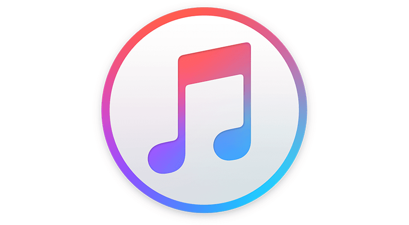

<ion-header>
    <ion-toolbar color="dark">
        <ion-buttons slot="start">
            <ion-menu-button menu="menup"></ion-menu-button>
          </ion-buttons>
        <ion-title class="ion-text-center">Artista</ion-title>
        <ion-buttons slot="end">
            <ion-avatar class="ion-padding">
              
            </ion-avatar>
          </ion-buttons>
    </ion-toolbar>
</ion-header>
 
<ion-content>
    <div class="imagen">
        
        <div>
            <h3 style="margin-top:40%">{{artista.name}}</h3>
        </div>
    </div>

    <ion-item color="primary">
        <ion-label class="ion-text-center">Canciones</ion-label>
    </ion-item>

    <ion-list>
        <ion-item id="icono" (click)="reproducir(track.preview_url,track.name,'hide')" *ngFor="let track of topTracks">
            <ion-avatar slot="start">
                
            </ion-avatar>
            <ion-label>{{track.name}}
                <br>
                <small>{{track.album.name}}</small>
            </ion-label>
            <ion-button slot="end" color="dark">
                <ion-icon name="play-outline"></ion-icon>
            </ion-button>
        </ion-item>
    </ion-list>
    <div id="audio" class="hideAudio">
        <div>
            <p slot="start">{{name}}</p>
            <audio controls autoplay [src]="url"></audio>
        </div>
    </div>

</ion-content>
